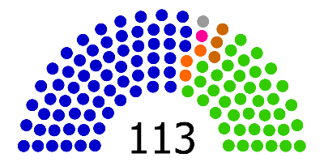
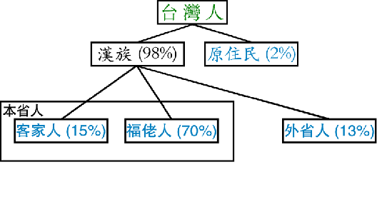

上个月就答应读者写一篇关于台湾服贸的点评，拖到今天才动手，实在惭愧 :(
关于“台湾服贸纠纷”和“太阳花学运”，网上已经有很多写得不错的评论文章。不过捏，大多数评论都只谈到其中的一两个点。咱们天朝有很多网友本来就缺少关于台湾的背景知识，看了这类文章之后，恐怕还是难以了解整个事件的全貌。所以捏，俺花了点时间汇总了一些信息，再加上俺的点评，希望有助于你了解整个事情的来龙去脉。然后你可以自行判断各方的利弊得失。
提醒一下：本文中俺的点评仅供参考。希望你在看俺的点评之前，已经有自己的观点、自己的判断。在上周的博文《不要成为粉丝——谈谈“偶像崇拜”的成因和危害》，俺已经强调过了——【独立思考很重要，没有独立思考就没有思想的自由！】所以对俺的观点，也不要盲从。
考虑到某些读者对台湾的情况不太了解，先作个背景介绍。如果你自认为对台湾的情况已经很熟悉，可以跳过本章节。
如今那些比较成熟的民主国家，搞得都是“三权分立”（其思想源自法国启蒙时期的名著《论法的精神》）。但是中华民国的国父孙中山别出心裁搞了一个“五权分立”。在原有的“立法权、司法权、行政权”三权之上，又多出来“监察权、考试权”。所以如今台湾的政治体制中，有“五院制”分别与这“五权”对应。比如“立法院”对应“立法权”，以此类推。
关于“五权分立”的更多介绍，可以看维基百科的词条（在“这里”）。至于“五权分立”和“三权分立”孰优孰劣，不是本文的重点，就不深入展开了。
可能有些同学会纳闷：“行政院”具有“行政权”，但是台湾总统也有行政权。这俩是不是重叠了。为了说清楚这个，就得聊台湾的“混合制政体”。
所谓的“政体”也就是政治体制（洋文叫“Form of Government”）。关于这个概念，俺曾经写过一篇《政治常识扫盲：聊聊常见的政治体制》。在这篇博文中提到了——搞共和制的国家，常见的政体包括：总统制、议会制、混合制。在这三种制度中，头两类大伙儿应该比较熟悉（比如美国、菲律宾、印尼是总统制；德国、印度、新加坡是议会制）。
至于“混合制”，知道的人比较少。这种制度也叫“双首长制”或“半总统制”，台湾采用的就是这种政体。在这种制度中，“国家元首”（以下简称“总统”）和“内阁首脑”（以下简称“总理”）都具有实权。总统由民众直选，而总理由总统任命（通常情况下，总统会任命议会的多数党领袖担任总理）。如果议会多数党跟总统是同一个党，自然没问题；如果是不同的党，就会出现“两党共治”。
目前成熟的民主国家中，法国是搞“混合制”搞得最好的，也是最有经验的。法国总统如果要任免总理，需要征询议会的意见。但是台湾的总统要任免总理（也就是“行政院长”），【无需】征询议会（立法院）的意见。所以台湾的“内阁首脑/行政院长”更像是给总统打下手的马仔，权力大为削弱。除了台湾，俄罗斯也是采用这种风格的“混合制”（总理权力很受限）。
说到这里，顺便多聊几句：
前面提到说“混合制”也叫“半总统制”。“半总统制”这个名称很有误导性——让人以为“混合制”的总统权力不如“总统制”的总统权力。其实不然。某些采用混合制的国家，总统的权力非常大，甚至可以解散议会（比如俄罗斯总统可以解散国家杜马）。所以，采用混合制的国家，如果制度设计不当，很可能蜕变为个人独裁（看看普京和梅德韦杰夫搞的“二人转”，你就会明白这点）。
接着再说说台湾的是多党制。
大部分搞多党制的国家，要么演变为一党独大，要么变成两党轮替。（这两种情况都可以用博弈论的数学模型来解释）
台湾演变为两党轮替——最大的两个党分别是：中国国民党（简称“国民党”）和民主进步党（简称“民进党”）
目前台湾立法院的113个席位中，国民党占65席，民进党占40席，其它几个席位是小党（台联、亲民党）和无党派人士。

（这张是政党在立法院的分布图，是俺从维基百科剽窃滴）
台湾的社会族群大致可以分为4类：
1. 原住民
在远古时代就开始居住在台湾的少数民族。人类学上属于“南岛语族”。
（注：关于这个语族，《枪炮、病菌与钢铁——人类社会的命运》一书还重点介绍过，俺的网盘分享了此书电子版）
2. 福佬人
主要是福建移民（祖籍大部分在泉州、漳州），民国之前就到了台湾。主要讲闽南语。
3. 客家人
主要是广东移民（祖籍大部分在镇平县、陆丰县），民国之前就到了台湾。主要讲客家话。
4. 外省人
大陆沦陷之后，跟着老蒋跑到台湾的大陆民众，各个省份都有。主要讲普通话。

（这张是族群分布图，是俺从维基百科剽窃滴）
请注意：“福佬人”和“客家人”自称【本省人】，与“外省人”相对。
为了让大伙儿初步了解台湾目前的经济状况，引述台湾官方（行政院主计总处）在2013年08公布的数据：
（2013年）上半年“实质平均薪资”减少 1.9%（史上第三大减幅）
（2013年）七月失业率则上升至 4.25%（亚洲四小龙最高，甚至高于日本）
20岁至24岁失业率升至 14.05%（约七分之一）
“服贸协议”全称是“海峡两岸服务贸易协议”，简称 CSSTA（维基的词条在“这里”）
海峡两岸曾经谈过一个《海峡两岸经济合作架构协议》（简称 ECFA）。在这个 ECFA 的第4条指的就是“服务贸易”。通俗而言，CSSTA 类似于 ECFA 的子集。
这个 ECFA 有点类似于 FTA （自由贸易协定），都是开放各自的市场，降低贸易壁垒（关税等）。
“服贸”涉及到的台湾产业包括如下。
非金融类：商业服务业；通讯服务业；营造及相关工程服务业；配销服务业；环境服务业；健康与社会服务业；观光及旅游服务业；娱乐、文化及运动服务业（视听服务业除外）；运输服务业；其他。
金融类：保险及其相关服务；证券、期货及其相关服务。
马英九是在任总统，国民党主席。
他虽然在2012年获得连任，但是在第二个任期，其民调支持率连创新低（最低时达到个位数，9%）。前面介绍过，近几年台湾的经济状况低迷，马英九支持率猛跌跟经济不景气有很大关系。
为啥马英九要不顾这么多民众反对，强力推动两岸服贸。主要原因就是马英九对两岸服贸寄予太大希望。他企图借助两岸服贸一举扭转经济颓势。
此人是政坛老滑头，相当的精明。他虽然属于国民党，但是在绿营（民进党、等）那边也吃得开。王金平能够长期担任立法院院长，跟他这种蓝绿通吃的风格有关。
很早以前（至少十年前），他跟马英九就出现矛盾。
去年（2013年）9月发生的“马王斗”（九月政争）让国民党高层内讧达到白热化（详细过程参见维基百科“这里”）。这事儿发展到最后，马英九甚至动用了大杀器——（以党主席的身份）推动国民党考纪会开除王金平党籍。一旦失去党籍，可能会导致王金平丧失立法委员身份；而丧失立委身份就可能丧失立法院院长职务。后来王金平闹到法院，总算保住党籍。
从此事可以看出：马王二人的关系已经差到极点。而且此事导致国民党高层的分化。比如国民党大佬连战就公开反对马英九的做法。
前面已经介绍了具有台湾特色的“双首长制”。江宜桦作为行政院长，名义上是内阁首脑，其实捏，只是帮总统打下手的货色。所以在整个服贸纠纷中，江宜桦虽然也经常抛头露面，但【无足轻重】——因为此职务更多的是执行者，而不是决策者。
这几个是【民进党大佬】。苏贞昌是目前的党主席，蔡英文是2012年民进党的总统候选人。谢长廷是2008年的总统候选人。
这俩是太阳花学运的主要领头人，都是“黑色岛国青年阵线”（简称“黑岛青”）的成员。
“黑岛青”是2013年7月专门为反对“黑箱服贸”而成立的。
俺发现有很多人用“一元化”的视角来看待“反服贸群体”。实际上，反对服贸的人分为好几种，动机各不相同。下面大致列举一下：
这类人的比例估计最大。普通民众当中的反服贸人士大多数是这类。他们担心大陆的大型企业（尤其是央企）进入台湾市场，小企业就难以生存。
而且最近10年香港的遭遇，被这类民众视作前车之鉴。
这类的比例也不小。有相当一部分民众担心中共会借机渗透台湾。这种渗透包括“国安层面”、“意识形态层面”、等。
比如通讯服务市场开放之后，有些人担心大陆电信公司搞“棱镜门”；比如出版市场开放之后，有人担心对民众的“共产宣传”。
这类人关注的重点不是服贸的利弊，而是签署服贸的过程是否符合法律？是否有暗箱操作？
关于“是否存在黑箱操作”的分析，后面会专门说。
这类人应该是少数。因为台湾之前跟其它国家（比如新西兰）也签署国类似的自由贸易协议，并没有招致如此巨大的反响。这说明“反全球化”不是主流。
这类人是最无聊的，不过比例也很低，主要是某些绿营（民进党、台联、等）的政客。台湾民主化之后，始终有一些反对党（蓝绿都有）人士为了党争，采用这种“为反对而反对”的立场——通俗而言就是：始终跟执政党唱反调。如今执政党是国民党（蓝营），所以某些绿营人士就会采用此手法。
说到这里，有必要提醒一下：台湾的民主化进程仅有20年左右，存在某些弊端是可以理解的。“为反对而反对”虽然挺无聊，但总好过独裁政权的“一言堂”。
整个过程，双方比较大的争议点有如下几个：
俺发现很多网友都陷入一个认知误区——单纯地谈论“服贸的优劣”。对台湾而言，服贸这个玩意儿，涉及的社会群体是各种各样滴。对某些社会群体，服贸是有利的；对另外一些社会群体，服贸是不利的。所以，凭空谈论服贸的好坏如同纸上谈兵。关键要看针对的是哪个群体。
维基百科上有一个“海峡两岸服务贸易协议”的词条，里面列出了正反双方对服贸的说辞。
支持服贸的言论来自如下这些人（不含职业政客）：
央行总裁彭淮南
晶华酒店董事长潘思亮
宏碁集团创办人施振荣
台达电创办人郑崇华
天下文化创办人高希均
中华民国全国商业总会理事长张平沼
中华民国全国商业总会监事会召集人王应杰
世界台湾商会联合总会总会长杨信
工业总会秘书长蔡练生
商业总会理事长赖正镒
电机电子工业同业公会副理事长郑富雄
艺人罗霈颖(原名罗璧玲)
（以上人名来自上述维基词条中列出的服贸【支持】言论）
反对服贸的言论来自这些人（不含职业政客）：
台大经济系教授林向恺
台湾印刷出版产业人士郝明义
中药商会联合会理事长朱溥霖
政治大学金融系教授殷乃平
台湾大学经济系主任郑秀玲
东吴大学教授郭振鹤
台湾大学法律系教授林钰雄
作家、社会评论家彭明辉
（以上人名来自上述维基词条中列出的服贸【反对】言论）
俺个人认为：
主要的支持者——集中在台商、大公司老板/股东、之类的群体。因为服贸签署之后，他们可以更方便地在大陆市场赚钱。所以他们当然大力支持服贸的签署。
主要的反对者——是那些小企业主，行业雇员、等群体。最近20年，天朝的“国进民退”，咱们这些大陆网友应该都有体会。所谓的“国进民退”就是民营企业的生存空间被国营企业（尤其是国企中的“央企”）压缩掉了。咱们天朝的央企，说白了就是“国家垄断资本主义”。不光是利用政策壁垒搞“国家垄断”，而且还跟权贵集团勾结。比如俺在前几天的博文《为啥周永康案还不公布？另八卦一下后续大老虎的热门人选》中提及的周永康、曾庆红、贺国强、李鹏、等家族。这些权贵家族纷纷渗透到央企中。如此一来，普通的民企根本无法与之抗衡。
咱们天朝的这些丑事，某些台湾网友当然也知道。所以台湾的小企业主、行业雇员，如果他们知道发生在大陆的“国进民退”，当然也会担心服贸签署之后带来的负面效应。
这个问题是正反双方争论的焦点之一。俺看了双方的好几篇文章，都说自己这方有理，但是论证过程都流于简单。后来找到这篇长文（链接在“这里”），说得还算详细。
把此文的开头部分摘录如下（第一句俺就很欣赏）
关于“两岸服贸协议”，这里面有一个打擦边球的地方——两岸关系的特殊之处。如果台湾跟其它国家签署贸易协议，视作“条约”——这个在中华民国法律中有很明确的定义，不会产生太大分歧。但是两岸之间签署贸易协议，不算“条约”——因为中华民国的宪法认为，大陆是中华民国的领土。所以两岸之间签署的东西，要参照“两岸人民关系条例”。但是这个条例又比较模糊，对某些细节没有界定清楚。
由于上述原因，导致这个问题引发大量口水战，但各自都无法说服对方。
对于太阳花学运，总体上俺是比较认同的。【俺对学运的认同跟“服贸”没啥关系】，主要是因为俺比较支持公民的非暴力抗争。在前两年的《谈革命》系列博文中，俺已经表达过类似的立场。
但是俺觉得：【“占领立法院和行政院”是太阳花学运的一大缺憾】。为啥捏？这要从两个方面进行分析。
太阳花学运的性质——是“改良”而不是“革命”
在《谈革命》系列中界定过“政治变革”的三种类型：改良、革命、政变。“改良”跟“革命”的区别在于：“革命”对政治制度的改变是彻底的/根本性的；而“改良”是不彻底的。
太阳花学运的政治诉求是基于“服贸议题”，其性质显然是“改良”。
如果某个非暴力抗争的性质是“革命”，那采用“占领国会”的手段就是正当的。比如1998年发生在印尼的非暴力革命，雅加达大学生占领国会大厦。当时的独裁总统苏哈托企图动用军队血腥镇压，但是军方抗命，苏哈托被迫下台。
反之，立足于“改良”的非暴力抗争，却采用“占领最高立法机构”的行为，导致国家立法机关瘫痪——让人感觉做得太过头。
“立法院/行政院”的性质——不是公共空间
在《政治常识扫盲：澄清“言论自由”的各种误区》一文中，俺解释过“公共空间”的概念（健忘的读者可以再去看看）。“公共空间”洋文叫“public sphere”，主要特征之一是：不属于任何个人，不属于任何组织/机构。由于这个特征，任何人都可以在公共空间发表言论。比如伦敦的海德公园就是非常有名的公共空间。对台湾来说，台北的凯达格兰大道和凯达格兰广场可以算是“公共空间”。但是“立法院办公场所”和“行政院办公场所”显然【不能算公共空间】（因为这两个地方都有明确的“所有者”）。所以俺认为：台湾学生占领立法院和行政院，超出了“非暴力改良”的边界。
作为对比，咱们来看看2006年发生在台湾的“反贪倒扁运动”。当时施明德发起的红衫军，规模空前（人数超过百万）。示威民众一度包围总统府和总统官邸。当时有很多人提议说，直接冲进总统官邸，把陈水扁抓起来。但是施明德坚决反对。因为他很清楚：如果示威民众冲进总统官邸，那么抗议活动的性质就变了。
从整个事件可以看出马英九很缺乏政治技巧。
民主体制和独裁体制最本质的区别是——分权。在分权体制下，没有人掌握绝对的权力。这种情况下，国家领导人需要一定的政治技巧才能推动和落实那些重大的事情。
举个例子，在美国名垂青史的林肯就很有政治技巧。为了达到最终目的，他懂得在合适的时机进行恰当的妥协；而且林肯能够把政治【对手】团结在自己周围，一般人很难做到这点。（有兴趣的同学可以看《一个妥协者的伟大胜利——亚伯拉罕·林肯的抉择 @ 南方人物周刊》）
俺个人认为：
马英九既不懂得“妥协的技巧”，也不善于团结不同立场的政治人物（所以才跟同党的王金平剧烈内讧）。
3月17日下午发生在立法院的事情，可以参见维基百科“这个词条”的介绍，过程很详细。
当时国民党立委张庆忠用30秒宣布如下：
此举让矛盾严重激化，并直接导致学生在18日晚间占领立法院。
说实在的，这是马英九政府和国民党方面最明显的败笔。
马英九在2014年3月公开宣称：两岸服贸协议若无法通过，会影响中华民国参与“跨太平洋伙伴协定”（TPP）。
可惜没过几天（4月10日），美国在台协会发言人金明表示：他看不出两岸服贸协议争议与 TPP 有直接关联。
又过了几天（4月21日），美国 APEC 资深官员王晓岷表示：ECFA 和加入 TPP 没有关系——
邱毅也算是比较有名气的立委。学生占领立法院之后，他在电视上抨击学生的行为，然后拿出一张现场照片说：
搞笑的是：邱毅指称的“一大堆香蕉”，其实是“向日葵”（也就是“太阳花”）。相关照片请看“这里”。
不得不说的是：这么低级的错误，后来居然上了CCTV的“海峡两岸”节目。相关视频请看“这里”（需翻墙）。
网上曾经流传一份“起底学运骨干”的帖子，称太阳花学运的主要骨干都是民进党党籍。后经媒体记者逐一确认，基本上与事实不服——主要骨干都【不是】民进党，基本上跟民进党无瓜葛。相关报道在“这里”。
国立中山大学社会学系是全台第一个自主决定罢课的系所。罢课之后，有数十个自称“家长”的民众拨打电话给中山大学社会系。社会系的系主任杨静利说：“有很多家长跟我们讲说，我们小孩已经大四了，罢课活动让孩子无法在今年毕业。只好无奈回应——我们系是（三年前）新成立的，我们最高年级只有大三，没有大四的同学。”（相关报道在“这里”）
显然，这些号称“家长”的人是挺服贸的人士，企图用这种方式阻止高校罢课。
俺认为这是“反服贸一方”的主要污点。在前面的段落已经具体分析过了，此处不再罗嗦。
另外俺要提醒一下：占领“立法院、行政院”只是整个“太阳花学运”的一个组成部分。不应该因为这个而否定整个太阳花学运。关于太阳花学运的积极意义，会在本文末尾总结。
前面背景介绍中提到了台湾政党情况——民进党在立法院处于少数党地位（40/113）。为了阻止服贸协议通过，民进党采用比较下三滥的手法——长时间霸占立法院主席台，致使服贸议题无法进行正常的讨论和表决。
如果俺没记错的话，民进党立委比国民党立委更经常采用一些下三滥的手法（除了强占主席台，还有“锁门、群殴、泼茶水、等”）。
俺觉得民进党应该多向欧美成熟民主国家的议会学习，看看人家的“少数党”是如何运作的。
在3月21日的反服贸集会上，苏贞昌（民进党主席）利用上台发言的机会，替台中市长参选人林佳龙拉票，台下哗然。
事后，苏贞昌通过发言人发表公开道歉。
关于此次太阳花学运意义，彭明辉（台湾清华的教授）在其个人博客发了一篇评论《學運成就了什麼──給參與學運的學生們》。俺觉得其中几段写得好，摘录如下：
为啥俺赞同这几段话的观点？因为在之前的《谈革命》系列的第3篇《政治变革需要哪些素质》，俺专门强调过：【政治素质】和【心理素质】是最关键的两个素质。“普及心理素质”有助于摆脱洗脑，降低脑残的比例；“普及政治素质”有助于让更多人成为“公民”，减少“臣民”和“奴性”。
当具备“公民意识”的人达到一定比例之后，才有可能发生【积极的】政治变革，才有可能在政治变革之后建立更成熟的政治制度。
最后留个思考题给列位看官——如果你是天朝的网民，你觉得台湾的这次服贸纠纷和太阳花学运，有哪些经验和教训值得大陆借鉴？
俺博客上，和本文相关的帖子（需翻墙）：
《台湾民主运动与独立运动简史》
《谈革命》（系列）
《政治常识扫盲：聊聊常见的政治体制》
《政治常识扫盲：澄清“言论自由”的各种误区》
《政治常识扫盲：理清“国家、政体、公民、政府、政党”等概念》
《批判性思维扫盲：学会区分“事实”与“观点”》
关于“台湾服贸纠纷”和“太阳花学运”，网上已经有很多写得不错的评论文章。不过捏，大多数评论都只谈到其中的一两个点。咱们天朝有很多网友本来就缺少关于台湾的背景知识，看了这类文章之后，恐怕还是难以了解整个事件的全貌。所以捏，俺花了点时间汇总了一些信息，再加上俺的点评，希望有助于你了解整个事情的来龙去脉。然后你可以自行判断各方的利弊得失。
提醒一下：本文中俺的点评仅供参考。希望你在看俺的点评之前，已经有自己的观点、自己的判断。在上周的博文《不要成为粉丝——谈谈“偶像崇拜”的成因和危害》，俺已经强调过了——【独立思考很重要，没有独立思考就没有思想的自由！】所以对俺的观点，也不要盲从。
★相关背景知识
考虑到某些读者对台湾的情况不太了解，先作个背景介绍。如果你自认为对台湾的情况已经很熟悉，可以跳过本章节。
◇“五权分立”和“五院制”
如今那些比较成熟的民主国家，搞得都是“三权分立”（其思想源自法国启蒙时期的名著《论法的精神》）。但是中华民国的国父孙中山别出心裁搞了一个“五权分立”。在原有的“立法权、司法权、行政权”三权之上，又多出来“监察权、考试权”。所以如今台湾的政治体制中，有“五院制”分别与这“五权”对应。比如“立法院”对应“立法权”，以此类推。
关于“五权分立”的更多介绍，可以看维基百科的词条（在“这里”）。至于“五权分立”和“三权分立”孰优孰劣，不是本文的重点，就不深入展开了。
可能有些同学会纳闷：“行政院”具有“行政权”，但是台湾总统也有行政权。这俩是不是重叠了。为了说清楚这个，就得聊台湾的“混合制政体”。
◇“混合制”政体（双首长制）
所谓的“政体”也就是政治体制（洋文叫“Form of Government”）。关于这个概念，俺曾经写过一篇《政治常识扫盲：聊聊常见的政治体制》。在这篇博文中提到了——搞共和制的国家，常见的政体包括：总统制、议会制、混合制。在这三种制度中，头两类大伙儿应该比较熟悉（比如美国、菲律宾、印尼是总统制；德国、印度、新加坡是议会制）。
至于“混合制”，知道的人比较少。这种制度也叫“双首长制”或“半总统制”，台湾采用的就是这种政体。在这种制度中，“国家元首”（以下简称“总统”）和“内阁首脑”（以下简称“总理”）都具有实权。总统由民众直选，而总理由总统任命（通常情况下，总统会任命议会的多数党领袖担任总理）。如果议会多数党跟总统是同一个党，自然没问题；如果是不同的党，就会出现“两党共治”。
目前成熟的民主国家中，法国是搞“混合制”搞得最好的，也是最有经验的。法国总统如果要任免总理，需要征询议会的意见。但是台湾的总统要任免总理（也就是“行政院长”），【无需】征询议会（立法院）的意见。所以台湾的“内阁首脑/行政院长”更像是给总统打下手的马仔，权力大为削弱。除了台湾，俄罗斯也是采用这种风格的“混合制”（总理权力很受限）。
说到这里，顺便多聊几句：
前面提到说“混合制”也叫“半总统制”。“半总统制”这个名称很有误导性——让人以为“混合制”的总统权力不如“总统制”的总统权力。其实不然。某些采用混合制的国家，总统的权力非常大，甚至可以解散议会（比如俄罗斯总统可以解散国家杜马）。所以，采用混合制的国家，如果制度设计不当，很可能蜕变为个人独裁（看看普京和梅德韦杰夫搞的“二人转”，你就会明白这点）。
◇政党情况
接着再说说台湾的是多党制。
大部分搞多党制的国家，要么演变为一党独大，要么变成两党轮替。（这两种情况都可以用博弈论的数学模型来解释）
台湾演变为两党轮替——最大的两个党分别是：中国国民党（简称“国民党”）和民主进步党（简称“民进党”）
目前台湾立法院的113个席位中，国民党占65席，民进党占40席，其它几个席位是小党（台联、亲民党）和无党派人士。
（这张是政党在立法院的分布图，是俺从维基百科剽窃滴）
◇社会族群情况
台湾的社会族群大致可以分为4类：
1. 原住民
在远古时代就开始居住在台湾的少数民族。人类学上属于“南岛语族”。
（注：关于这个语族，《枪炮、病菌与钢铁——人类社会的命运》一书还重点介绍过，俺的网盘分享了此书电子版）
2. 福佬人
主要是福建移民（祖籍大部分在泉州、漳州），民国之前就到了台湾。主要讲闽南语。
3. 客家人
主要是广东移民（祖籍大部分在镇平县、陆丰县），民国之前就到了台湾。主要讲客家话。
4. 外省人
大陆沦陷之后，跟着老蒋跑到台湾的大陆民众，各个省份都有。主要讲普通话。
（这张是族群分布图，是俺从维基百科剽窃滴）
请注意：“福佬人”和“客家人”自称【本省人】，与“外省人”相对。
◇经济状况
为了让大伙儿初步了解台湾目前的经济状况，引述台湾官方（行政院主计总处）在2013年08公布的数据：
（2013年）上半年“实质平均薪资”减少 1.9%（史上第三大减幅）
（2013年）七月失业率则上升至 4.25%（亚洲四小龙最高，甚至高于日本）
20岁至24岁失业率升至 14.05%（约七分之一）
◇服贸协议
“服贸协议”全称是“海峡两岸服务贸易协议”，简称 CSSTA（维基的词条在“这里”）
海峡两岸曾经谈过一个《海峡两岸经济合作架构协议》（简称 ECFA）。在这个 ECFA 的第4条指的就是“服务贸易”。通俗而言，CSSTA 类似于 ECFA 的子集。
这个 ECFA 有点类似于 FTA （自由贸易协定），都是开放各自的市场，降低贸易壁垒（关税等）。
“服贸”涉及到的台湾产业包括如下。
非金融类：商业服务业；通讯服务业；营造及相关工程服务业；配销服务业；环境服务业；健康与社会服务业；观光及旅游服务业；娱乐、文化及运动服务业（视听服务业除外）；运输服务业；其他。
金融类：保险及其相关服务；证券、期货及其相关服务。
★相关人物介绍
◇马英九
马英九是在任总统，国民党主席。
他虽然在2012年获得连任，但是在第二个任期，其民调支持率连创新低（最低时达到个位数，9%）。前面介绍过，近几年台湾的经济状况低迷，马英九支持率猛跌跟经济不景气有很大关系。
为啥马英九要不顾这么多民众反对，强力推动两岸服贸。主要原因就是马英九对两岸服贸寄予太大希望。他企图借助两岸服贸一举扭转经济颓势。
◇王金平
此人是政坛老滑头，相当的精明。他虽然属于国民党，但是在绿营（民进党、等）那边也吃得开。王金平能够长期担任立法院院长，跟他这种蓝绿通吃的风格有关。
很早以前（至少十年前），他跟马英九就出现矛盾。
◇马王之争
去年（2013年）9月发生的“马王斗”（九月政争）让国民党高层内讧达到白热化（详细过程参见维基百科“这里”）。这事儿发展到最后，马英九甚至动用了大杀器——（以党主席的身份）推动国民党考纪会开除王金平党籍。一旦失去党籍，可能会导致王金平丧失立法委员身份；而丧失立委身份就可能丧失立法院院长职务。后来王金平闹到法院，总算保住党籍。
从此事可以看出：马王二人的关系已经差到极点。而且此事导致国民党高层的分化。比如国民党大佬连战就公开反对马英九的做法。
◇江宜桦
前面已经介绍了具有台湾特色的“双首长制”。江宜桦作为行政院长，名义上是内阁首脑，其实捏，只是帮总统打下手的货色。所以在整个服贸纠纷中，江宜桦虽然也经常抛头露面，但【无足轻重】——因为此职务更多的是执行者，而不是决策者。
◇苏贞昌、蔡英文、谢长廷
这几个是【民进党大佬】。苏贞昌是目前的党主席，蔡英文是2012年民进党的总统候选人。谢长廷是2008年的总统候选人。
◇陈为廷、林飞帆
这俩是太阳花学运的主要领头人，都是“黑色岛国青年阵线”（简称“黑岛青”）的成员。
“黑岛青”是2013年7月专门为反对“黑箱服贸”而成立的。
★反服贸的是哪些人？
俺发现有很多人用“一元化”的视角来看待“反服贸群体”。实际上，反对服贸的人分为好几种，动机各不相同。下面大致列举一下：
◇经济上恐中
这类人的比例估计最大。普通民众当中的反服贸人士大多数是这类。他们担心大陆的大型企业（尤其是央企）进入台湾市场，小企业就难以生存。
而且最近10年香港的遭遇，被这类民众视作前车之鉴。
◇政治上恐中（反共）
这类的比例也不小。有相当一部分民众担心中共会借机渗透台湾。这种渗透包括“国安层面”、“意识形态层面”、等。
比如通讯服务市场开放之后，有些人担心大陆电信公司搞“棱镜门”；比如出版市场开放之后，有人担心对民众的“共产宣传”。
◇程序正义派
这类人关注的重点不是服贸的利弊，而是签署服贸的过程是否符合法律？是否有暗箱操作？
关于“是否存在黑箱操作”的分析，后面会专门说。
◇反全球化
这类人应该是少数。因为台湾之前跟其它国家（比如新西兰）也签署国类似的自由贸易协议，并没有招致如此巨大的反响。这说明“反全球化”不是主流。
◇为反对而反对
这类人是最无聊的，不过比例也很低，主要是某些绿营（民进党、台联、等）的政客。台湾民主化之后，始终有一些反对党（蓝绿都有）人士为了党争，采用这种“为反对而反对”的立场——通俗而言就是：始终跟执政党唱反调。如今执政党是国民党（蓝营），所以某些绿营人士就会采用此手法。
说到这里，有必要提醒一下：台湾的民主化进程仅有20年左右，存在某些弊端是可以理解的。“为反对而反对”虽然挺无聊，但总好过独裁政权的“一言堂”。
★双方的主要争议
整个过程，双方比较大的争议点有如下几个：
◇“两岸服贸协议”是好是坏？
俺发现很多网友都陷入一个认知误区——单纯地谈论“服贸的优劣”。对台湾而言，服贸这个玩意儿，涉及的社会群体是各种各样滴。对某些社会群体，服贸是有利的；对另外一些社会群体，服贸是不利的。所以，凭空谈论服贸的好坏如同纸上谈兵。关键要看针对的是哪个群体。
维基百科上有一个“海峡两岸服务贸易协议”的词条，里面列出了正反双方对服贸的说辞。
支持服贸的言论来自如下这些人（不含职业政客）：
央行总裁彭淮南
晶华酒店董事长潘思亮
宏碁集团创办人施振荣
台达电创办人郑崇华
天下文化创办人高希均
中华民国全国商业总会理事长张平沼
中华民国全国商业总会监事会召集人王应杰
世界台湾商会联合总会总会长杨信
工业总会秘书长蔡练生
商业总会理事长赖正镒
电机电子工业同业公会副理事长郑富雄
艺人罗霈颖(原名罗璧玲)
（以上人名来自上述维基词条中列出的服贸【支持】言论）
反对服贸的言论来自这些人（不含职业政客）：
台大经济系教授林向恺
台湾印刷出版产业人士郝明义
中药商会联合会理事长朱溥霖
政治大学金融系教授殷乃平
台湾大学经济系主任郑秀玲
东吴大学教授郭振鹤
台湾大学法律系教授林钰雄
作家、社会评论家彭明辉
（以上人名来自上述维基词条中列出的服贸【反对】言论）
俺个人认为：
主要的支持者——集中在台商、大公司老板/股东、之类的群体。因为服贸签署之后，他们可以更方便地在大陆市场赚钱。所以他们当然大力支持服贸的签署。
主要的反对者——是那些小企业主，行业雇员、等群体。最近20年，天朝的“国进民退”，咱们这些大陆网友应该都有体会。所谓的“国进民退”就是民营企业的生存空间被国营企业（尤其是国企中的“央企”）压缩掉了。咱们天朝的央企，说白了就是“国家垄断资本主义”。不光是利用政策壁垒搞“国家垄断”，而且还跟权贵集团勾结。比如俺在前几天的博文《为啥周永康案还不公布？另八卦一下后续大老虎的热门人选》中提及的周永康、曾庆红、贺国强、李鹏、等家族。这些权贵家族纷纷渗透到央企中。如此一来，普通的民企根本无法与之抗衡。
咱们天朝的这些丑事，某些台湾网友当然也知道。所以台湾的小企业主、行业雇员，如果他们知道发生在大陆的“国进民退”，当然也会担心服贸签署之后带来的负面效应。
◇审议过程是否违规？有没有黑箱操作？
这个问题是正反双方争论的焦点之一。俺看了双方的好几篇文章，都说自己这方有理，但是论证过程都流于简单。后来找到这篇长文（链接在“这里”），说得还算详细。
把此文的开头部分摘录如下（第一句俺就很欣赏）
不要盡信本文，就如同任何懶人包一樣，不要當一個只接收答案的人
你要先知道：
立法程序長這樣
1. 行政院送案給立法院
2. 立法院程序委員會決定下次院會議程要討論那些法案
3. 立法院會一讀
4. 如果是審議案就送相關委員會審查，備審案可以跳過
5. 立法院會二讀
6. 立法院會三讀通過
現在服貿協議的進度：通過委員會進入二讀
事件簡要：
之前服貿協議經過朝野協商說要逐條審議
並且要等公聽會開完之後才開始審議
不過接連幾天議事衝突，沒有進展
3月17號張慶忠委員稱服貿協議是行政命令放三個月就算已審
後來又補充說服貿協議本來就是備查案不用審
所以這次事件的爭議：
服貿協議到底是審議案還是備查案？能不能當作行政命令？
這問題其實出乎意料之外的複雜
......
关于“两岸服贸协议”，这里面有一个打擦边球的地方——两岸关系的特殊之处。如果台湾跟其它国家签署贸易协议，视作“条约”——这个在中华民国法律中有很明确的定义，不会产生太大分歧。但是两岸之间签署贸易协议，不算“条约”——因为中华民国的宪法认为，大陆是中华民国的领土。所以两岸之间签署的东西，要参照“两岸人民关系条例”。但是这个条例又比较模糊，对某些细节没有界定清楚。
由于上述原因，导致这个问题引发大量口水战，但各自都无法说服对方。
◇“占领立法院、行政院”是否正当？
对于太阳花学运，总体上俺是比较认同的。【俺对学运的认同跟“服贸”没啥关系】，主要是因为俺比较支持公民的非暴力抗争。在前两年的《谈革命》系列博文中，俺已经表达过类似的立场。
但是俺觉得：【“占领立法院和行政院”是太阳花学运的一大缺憾】。为啥捏？这要从两个方面进行分析。
太阳花学运的性质——是“改良”而不是“革命”
在《谈革命》系列中界定过“政治变革”的三种类型：改良、革命、政变。“改良”跟“革命”的区别在于：“革命”对政治制度的改变是彻底的/根本性的；而“改良”是不彻底的。
太阳花学运的政治诉求是基于“服贸议题”，其性质显然是“改良”。
如果某个非暴力抗争的性质是“革命”，那采用“占领国会”的手段就是正当的。比如1998年发生在印尼的非暴力革命，雅加达大学生占领国会大厦。当时的独裁总统苏哈托企图动用军队血腥镇压，但是军方抗命，苏哈托被迫下台。
反之，立足于“改良”的非暴力抗争，却采用“占领最高立法机构”的行为，导致国家立法机关瘫痪——让人感觉做得太过头。
“立法院/行政院”的性质——不是公共空间
在《政治常识扫盲：澄清“言论自由”的各种误区》一文中，俺解释过“公共空间”的概念（健忘的读者可以再去看看）。“公共空间”洋文叫“public sphere”，主要特征之一是：不属于任何个人，不属于任何组织/机构。由于这个特征，任何人都可以在公共空间发表言论。比如伦敦的海德公园就是非常有名的公共空间。对台湾来说，台北的凯达格兰大道和凯达格兰广场可以算是“公共空间”。但是“立法院办公场所”和“行政院办公场所”显然【不能算公共空间】（因为这两个地方都有明确的“所有者”）。所以俺认为：台湾学生占领立法院和行政院，超出了“非暴力改良”的边界。
作为对比，咱们来看看2006年发生在台湾的“反贪倒扁运动”。当时施明德发起的红衫军，规模空前（人数超过百万）。示威民众一度包围总统府和总统官邸。当时有很多人提议说，直接冲进总统官邸，把陈水扁抓起来。但是施明德坚决反对。因为他很清楚：如果示威民众冲进总统官邸，那么抗议活动的性质就变了。
★服贸【支持方】的污点和败笔
◇马英九的问题
从整个事件可以看出马英九很缺乏政治技巧。
民主体制和独裁体制最本质的区别是——分权。在分权体制下，没有人掌握绝对的权力。这种情况下，国家领导人需要一定的政治技巧才能推动和落实那些重大的事情。
举个例子，在美国名垂青史的林肯就很有政治技巧。为了达到最终目的，他懂得在合适的时机进行恰当的妥协；而且林肯能够把政治【对手】团结在自己周围，一般人很难做到这点。（有兴趣的同学可以看《一个妥协者的伟大胜利——亚伯拉罕·林肯的抉择 @ 南方人物周刊》）
俺个人认为：
马英九既不懂得“妥协的技巧”，也不善于团结不同立场的政治人物（所以才跟同党的王金平剧烈内讧）。
◇张庆忠的30秒
3月17日下午发生在立法院的事情，可以参见维基百科“这个词条”的介绍，过程很详细。
当时国民党立委张庆忠用30秒宣布如下：
出席人数五十二人，已达法定人数，现在开会，进行讨论事项；海峡两岸服务贸易协议，本案已逾三个月期限，依法视为已审查，送院会存查，散会。
此举让矛盾严重激化，并直接导致学生在18日晚间占领立法院。
说实在的，这是马英九政府和国民党方面最明显的败笔。
◇马英九政府的虚假宣传
马英九在2014年3月公开宣称：两岸服贸协议若无法通过，会影响中华民国参与“跨太平洋伙伴协定”（TPP）。
可惜没过几天（4月10日），美国在台协会发言人金明表示：他看不出两岸服贸协议争议与 TPP 有直接关联。
又过了几天（4月21日），美国 APEC 资深官员王晓岷表示：ECFA 和加入 TPP 没有关系——
我们只会问你要开放哪些市场，不是问你对中国开放哪些市场。
◇蓝营立委邱毅的抹黑宣传
邱毅也算是比较有名气的立委。学生占领立法院之后，他在电视上抨击学生的行为，然后拿出一张现场照片说：
有的就地睡觉，然后吃得是满地的狼藉，请看这个就是立法机构的发言台，在立法机构的发言台上面，大家看到没有一大堆的香蕉，很明显的这个香蕉是谁送的，后来我查得很清楚，这个香蕉就是民进党的党团送进来的。
搞笑的是：邱毅指称的“一大堆香蕉”，其实是“向日葵”（也就是“太阳花”）。相关照片请看“这里”。
不得不说的是：这么低级的错误，后来居然上了CCTV的“海峡两岸”节目。相关视频请看“这里”（需翻墙）。
◇抹黑学运骨干的网文
网上曾经流传一份“起底学运骨干”的帖子，称太阳花学运的主要骨干都是民进党党籍。后经媒体记者逐一确认，基本上与事实不服——主要骨干都【不是】民进党，基本上跟民进党无瓜葛。相关报道在“这里”。
◇挺服贸人士的假冒身份
国立中山大学社会学系是全台第一个自主决定罢课的系所。罢课之后，有数十个自称“家长”的民众拨打电话给中山大学社会系。社会系的系主任杨静利说：“有很多家长跟我们讲说，我们小孩已经大四了，罢课活动让孩子无法在今年毕业。只好无奈回应——我们系是（三年前）新成立的，我们最高年级只有大三，没有大四的同学。”（相关报道在“这里”）
显然，这些号称“家长”的人是挺服贸的人士，企图用这种方式阻止高校罢课。
★服贸【反对方】的污点和败笔
◇占领立法院、行政院
俺认为这是“反服贸一方”的主要污点。在前面的段落已经具体分析过了，此处不再罗嗦。
另外俺要提醒一下：占领“立法院、行政院”只是整个“太阳花学运”的一个组成部分。不应该因为这个而否定整个太阳花学运。关于太阳花学运的积极意义，会在本文末尾总结。
◇民进党立委霸占立法院主席台
前面背景介绍中提到了台湾政党情况——民进党在立法院处于少数党地位（40/113）。为了阻止服贸协议通过，民进党采用比较下三滥的手法——长时间霸占立法院主席台，致使服贸议题无法进行正常的讨论和表决。
如果俺没记错的话，民进党立委比国民党立委更经常采用一些下三滥的手法（除了强占主席台，还有“锁门、群殴、泼茶水、等”）。
俺觉得民进党应该多向欧美成熟民主国家的议会学习，看看人家的“少数党”是如何运作的。
◇苏贞昌借机拉票
在3月21日的反服贸集会上，苏贞昌（民进党主席）利用上台发言的机会，替台中市长参选人林佳龙拉票，台下哗然。
事后，苏贞昌通过发言人发表公开道歉。
★太阳花学运的【意义】
关于此次太阳花学运意义，彭明辉（台湾清华的教授）在其个人博客发了一篇评论《學運成就了什麼──給參與學運的學生們》。俺觉得其中几段写得好，摘录如下：
學運是為了深化民主，而不是為了奪權，或者逼統治者接受任何條件。
......
會有人獨裁，是因為有一大堆不思不想的順民！學運的最高成就是在減少台灣的順民人數。
......
把一部憲法和一整套民主制度送給一群奴性深重的人，他會用民主程序選出一個獨裁者，再授權給他把憲法改成適合獨裁的版本。民主真正的敵人是一群奴性深重的順民，把順民變成不那麼具有奴性，這才是學運帶給這個社會最重要的成就。
为啥俺赞同这几段话的观点？因为在之前的《谈革命》系列的第3篇《政治变革需要哪些素质》，俺专门强调过：【政治素质】和【心理素质】是最关键的两个素质。“普及心理素质”有助于摆脱洗脑，降低脑残的比例；“普及政治素质”有助于让更多人成为“公民”，减少“臣民”和“奴性”。
当具备“公民意识”的人达到一定比例之后，才有可能发生【积极的】政治变革，才有可能在政治变革之后建立更成熟的政治制度。
★咱们天朝的网友该总结哪些经验/教训？
最后留个思考题给列位看官——如果你是天朝的网民，你觉得台湾的这次服贸纠纷和太阳花学运，有哪些经验和教训值得大陆借鉴？
俺博客上，和本文相关的帖子（需翻墙）：
《台湾民主运动与独立运动简史》
《谈革命》（系列）
《政治常识扫盲：聊聊常见的政治体制》
《政治常识扫盲：澄清“言论自由”的各种误区》
《政治常识扫盲：理清“国家、政体、公民、政府、政党”等概念》
《批判性思维扫盲：学会区分“事实”与“观点”》
版权声明
本博客所有的原创文章，作者皆保留版权。转载必须包含本声明，保持本文完整，并以超链接形式注明作者编程随想和本文原始地址：
https://program-think.blogspot.com/2014/05/taiwan-sunflower-student-movement.html
本博客所有的原创文章，作者皆保留版权。转载必须包含本声明，保持本文完整，并以超链接形式注明作者编程随想和本文原始地址：
https://program-think.blogspot.com/2014/05/taiwan-sunflower-student-movement.html